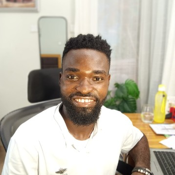

Marketing automation and CRM workflows
Lead segmentation, nurture sequences, CRM management, customer follow-up, and workflow design using tools such as GoHighLevel, Klaviyo, SimplyBook.me, Gmail, Airtable, and Make.com.
Marketing systemsAutomationFunnels
Lawrence Martins is a marketing and automation specialist who helps businesses build clearer offers, stronger customer journeys, and practical systems for attracting, nurturing, and converting the right audience.
Based in Lagos, Nigeria. Available for remote projects.

Many businesses don't need more disconnected marketing activity. They need a system that moves a person from first touch to follow-up, conversion, and retention. Lawrence combines positioning, content, funnels, email, CRM workflows, and automation to make that journey clearer and easier to manage.
Shape positioning, messaging, audience segments, and go-to-market plans around the customer and the commercial objective.
Create landing pages, webinar funnels, lead capture, link-in-bio paths, email sequences, SMS follow-up, and CRM handoffs.
Connect tools and workflows so content, communication, lead handling, and reporting take less manual effort.
Lead segmentation, nurture sequences, CRM management, customer follow-up, and workflow design using tools such as GoHighLevel, Klaviyo, SimplyBook.me, Gmail, Airtable, and Make.com.
Campaign planning, segmented lists, personalized email templates, automated reminders, cold-email systems, newsletter production, and campaign tracking.
Webinar registration, confirmation and reminder sequences, post-event follow-up, conversion paths, landing pages, and integrations between funnel, webinar, and CRM tools.
Go-to-market planning, product positioning, buyer-role messaging, sales materials, competitive-objection handling, market communication, and launch readiness.
Content calendars, social-content planning, AI-assisted content workflows, blog and social repurposing, and channel-specific distribution across Instagram, LinkedIn, Facebook, X, TikTok, Pinterest, Reddit, and WordPress.
Brand strategy, brand books, logo direction, social-media kits, messaging systems, and campaign-ready visual assets for growing businesses and products.
What each project needed, what Lawrence built, and the tools involved.
Connecting CRM, SMS and field photos into one automated customer journey.
The business had a strong reputation, with a 4.8-star rating and 50+ Google reviews, but a disconnected operation. Leads, field photos, invoices and payments lived in separate places, and the website and Google profile weren't working as hard as they could.
Lawrence audited the website, Google profile and customer journey, then built the automation connecting the CRM, SMS outreach and the crew's field photo app. Leads are sorted by intent, opt-outs are handled automatically, and finished-job photos and payment updates reach the customer record without anyone copying them over.
Enrolled means contacts that passed through a workflow, not sales. Both workflows are live and published.
A prioritized action report: 2 high-priority issues, 2 medium, 1 notice and 4 items already optimized. Each came with why it matters, a step-by-step fix and an owner, with high and medium fixes due before social traffic started.
A two-week plan: reply to every unanswered review, swap the SMS-only booking link for a tracked GoHighLevel booking page, tighten categories and services, add FAQ content, and set weekly posts, post-job review requests and monthly tracking.
Two GoHighLevel workflows fed by Sendivo. Replies are routed by intent, with the team alerted instantly, and anyone who opts out is set to Do Not Disturb and removed from every workflow automatically.
A field standard with a truck checklist: one project per address, matched before and after photos, logged pre-existing damage, and a clear definition of done. The "Completed" label is what triggers the automation.
An inbound Sendivo webhook triggers the workflow, and a condition step reads the reply and routes it:
| Reply | Route | What happens |
|---|---|---|
| Contains "yes" | Interested | Contact created, reply logged, tagged, opportunity created or updated, automated reply sent, team alerted by email, in-app notification and SMS |
| Contains "text" | Text follow-up | Contact created, reply logged, tagged, follow-up text sent, team alerted |
| Contains "not interested" | Not interested | Routed to the tagging path |
| No match | Fallback | Tagged and added to a follow-up workflow |
When a contact is tagged as blocked, the workflow turns on Do Not Disturb, adds a DND tag and removes the contact from every workflow, so no one who said no is messaged again.
A live webinar has to register people, keep them coming back, and follow up afterwards without anyone chasing by hand.
Lawrence built a GoHighLevel webinar funnel integrated with WebinarJam. The system covered registration forms, confirmation emails, reminders, registration tracking, follow-up, and post-webinar content delivery: end-to-end funnel implementation across several tools for a live event.
Manual scheduling was creating friction between a client booking and hearing from the practice again.
Lawrence connected SimplyBook.me and Klaviyo to create a smoother booking and communication experience. The system handles booking, personalized reminders, and ongoing email communication, giving clients a more consistent journey than manual scheduling allowed.
In a high-volume, intent-driven channel, listings lose visibility unless they are renewed, priced, and described well.
For real-estate and mobile-phone businesses, Lawrence managed Facebook Marketplace profiles, listings, renewals, pricing and keyword optimization, descriptions, inquiry handling, and listing visibility.
A fragrance business needed a clearer identity and a connected path from social attention to purchase and repeat purchase.
Lawrence prepared a growth and rebrand strategy that moved Bimbs.ng toward an Aurenza fragrance-house identity. It connects a link-in-bio command center to an ecommerce store, a scent-matching experience, campaign landing pages, WhatsApp audience building, email capture, upsells, influencer links, and retention campaigns.
Transcripts, inboxes, and content repurposing eat hours that a well-built scenario can take over.
Lawrence has documented multiple Make.com workflows that connect AI models with everyday business tools, from call analysis and inbox replies to video production and multi-channel publishing.
A platform connecting families with caregivers has to earn trust before it can earn a booking.
Lawrence developed the strategic brand foundations for Ulo Helps, a platform connecting families and individuals with verified caregivers. The work covers purpose, mission, vision, value proposition, emotional positioning, customer segments, and a human-first technology narrative.
A product needed consistent visibility across many channels and several distinct audiences at once.
At Haards, Lawrence worked across go-to-market planning, channel-product development, positioning, messaging, advertising-cost efficiency, product-design collaboration, and market visibility. His content framework plans distribution across more than ten channels, with separate audience segments for partners, SMEs, and user-generated content.
Growing businesses need an identity system they can apply consistently, not just a logo.
Brand books, logo systems, color palettes, typography, usage guidance, social-media kits, highlight covers, and campaign assets for multiple brands.
Systems only last if the people running them understand how they work, and too many teams depend on the person who built them.
RichiesPlatform is Lawrence's community for developing marketing experts who can deliver real industry results, both in their careers and as entrepreneurs in their own businesses. It's also how he trains teams to manage the solutions he builds sustainably, without relying entirely on him or his technical team.
Gather the offer, audience, commercial objective, existing tools, customer journey, and operational constraints.
Identify positioning gaps, conversion points, follow-up needs, audience segments, and repetitive tasks that can be improved or automated.
Implement the funnel, campaign, CRM workflow, email or SMS sequence, content process, integration, or brand asset.
Check the customer experience, tracking, handoffs, deliverability, automation logic, and campaign performance, then improve based on evidence.
Lawrence Martins is a marketing and automation specialist based in Lagos, Nigeria. His experience spans product marketing, email marketing, marketing automation, funnel building, webinar systems, CRM workflows, social-media operations, brand strategy, and AI-assisted business processes.
He has worked remotely with businesses across marketing, wellness, real estate, ecommerce, education, care, home services, and professional services.
He is also an educator who trains people on digital marketing and automation concepts. Through RichiesPlatform, his community of marketing practitioners, he prepares teams to run the systems they depend on themselves.
An engineering degree and hands-on marketing work mean Lawrence thinks about the customer, the campaign, the workflow, and the system underneath it together.
Tell Lawrence what you are trying to launch, improve, or automate. He can help you find the right next step, whether that's a funnel, lifecycle campaign, CRM workflow, product-marketing plan, content system, automation build, or training so your team can run it.
Start a conversationOpens an email with a few prompts so you can describe the project.